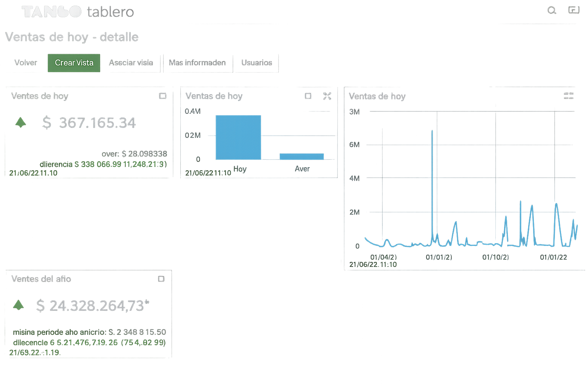
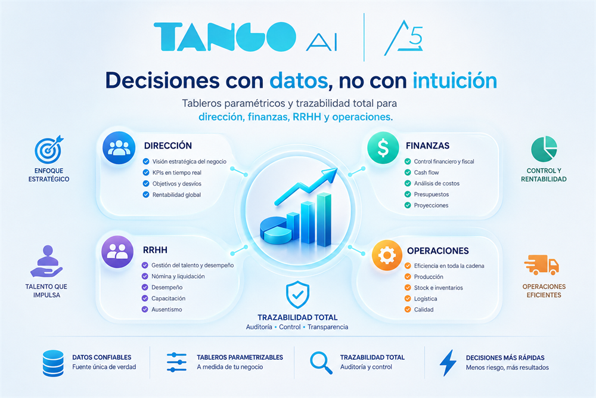
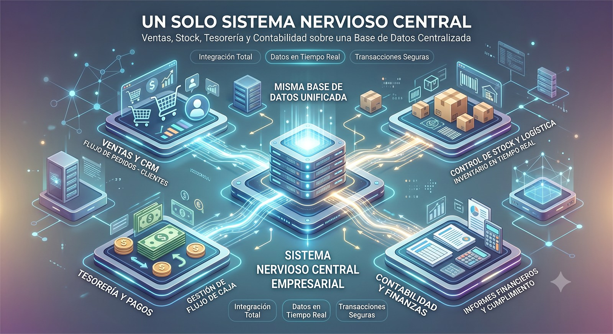
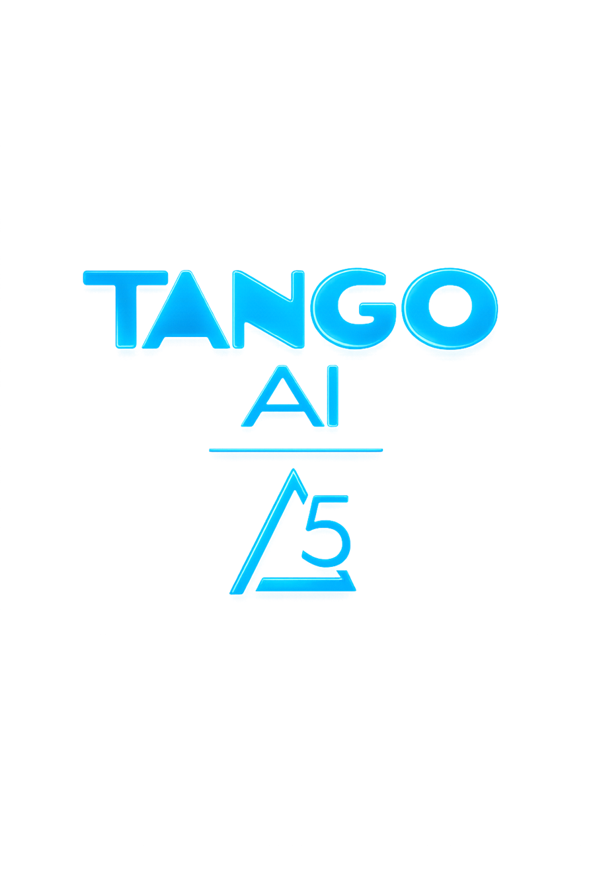

Control total en tiempo real
¿Crecimiento desordenado y decisiones con datos desactualizados?
Solución: tableros paramétricos móviles con Tango Live y unificación tecnológica de todas las áreas.
Potenciamos el crecimiento de tu empresa con tecnología de vanguardia y asesoramiento profesional especializado.

empresas argentinas gestionan su día a día con Tango
años de trayectoria respaldan al ecosistema Tango
clientes activos confían en Sandra Chaves y Asociados
años de experiencia propia en consultoría informática
En Sandra Chaves y asociados, nos dedicamos a transformar la operativa de las empresas argentinas a través de la implementación de herramientas líderes que garantizan eficiencia, seguridad y cumplimiento normativo. Como consultores certificados, nuestra misión es acompañarte en cada paso de tu evolución digital, asegurando que cuentes con el respaldo necesario para tomar las mejores decisiones.

Tableros paramétricos y trazabilidad total para dirección, finanzas, RRHH y operaciones.
Cada decisor ve su dolor resuelto con tecnología concreta del ecosistema Tango.
¿Crecimiento desordenado y decisiones con datos desactualizados?
Solución: tableros paramétricos móviles con Tango Live y unificación tecnológica de todas las áreas.
¿Conciliación bancaria manual en Excel y cierres contables lentos?
Solución: integración bancaria vía API, contabilización automática con ajustes NIIF y visibilidad 360°.
¿Errores de liquidación, convenios desactualizados y pilas de papeles?
Solución: liquidación sindical automatizada, Libro de Sueldos Digital y portal de autogestión con firma digital.
¿Sistemas inconexos, quiebres de stock en ventas online y datos vulnerables?
Solución: APIs robustas, sincronización omnicanal, cifrado en SQL y arquitectura descentralizada.
Cada solución se compone de módulos que se activan según tu operación. Todas comparten la misma base de datos, el mismo Cumplimiento Normativo y las mismas herramientas transversales.

El ERP central para administrar todo tu negocio.

Sueldos y personas, sin riesgo legal.

Facturación ágil en mostrador y comercios.

Gestión multi-empresa para estudios.

Salón, cocina y delivery integrados.

Ventas, stock, tesorería y contabilidad trabajando sobre la misma base de datos.
El corazón de nuestra propuesta es Tango Gestión, el software líder para PyMEs y grandes empresas en Argentina. Esta herramienta ha sido desarrollada específicamente para lograr los mejores resultados operativos de la manera más fácil y en el menor tiempo posible.
Delta es la versión evolutiva del software: tu ecosistema se actualiza sin cambiar de producto. Mantené tu negocio a la vanguardia tecnológica y normativa con la última versión del ecosistema Tango, diseñada para ofrecerte la mayor agilidad y seguridad operativa.

Cualquiera sea la solución que implementes, estas herramientas ya vienen con el ecosistema.
Tableros paramétricos móviles para decidir con datos empíricos, estés donde estés.
Sincronización de sucursales y puntos de venta con el núcleo central, en tiempo real.
Emisión de comprobantes con validación directa ante ARCA, sin servicios de terceros.
Mercado Libre, Tiendanube, bancos y tus sistemas propios conectados al mismo núcleo.
Facturación fiscal, e-commerce, bancos y sucursales fluyendo hacia un solo núcleo de datos.
Los argumentos que respaldan la inversión tecnológica más segura del mercado argentino.
Más de 79.800 empresas confían en Tango para gestionar sus operaciones. Nuestra trayectoria y liderazgo nos convierten en la solución preferida por negocios de todos los tamaños y sectores.
Tango no es solo un software, es una comunidad de expertos, consultores y clientes que comparten conocimientos y mejores prácticas. Con más de 200 centros de servicio en todo el país, siempre tendrás asistencia cercana.
Podés instalar tu Tango en servidores propios o en la nube. Vos elegís dónde alojar la información de tu empresa.
Nos anticipamos a los cambios legales e impositivos, garantizando que tu empresa esté siempre en regla con la ARCA y demás regulaciones sin preocuparte por modificaciones repentinas.
Nuestro programa Tango Horizontes ha formado a más de 110.000 alumnos, asegurando que siempre encuentres profesionales capacitados en nuestro software.
Olvídate de tareas manuales y procesos lentos. Tango optimiza la facturación, contabilidad, RRHH y gestión financiera con automatización avanzada.
Desde pymes hasta grandes empresas, Tango crece con vos. Ofrecemos soluciones modulares y escalables que se adaptan a tus necesidades.
Invertimos en desarrollo continuo para brindarte las mejores herramientas y funcionalidades. Con Tango, siempre estarás un paso adelante.
Tango se conecta con múltiples plataformas y sistemas externos, permitiendo una gestión 100% integrada y eficiente.
Más de 35 años de trayectoria avalan nuestra calidad y compromiso con el crecimiento de las empresas argentinas.
Contamos con más de 200 clientes que confiaron en nosotros, al momento de contactarnos podemos brindar sus contactos para obtener las mejores referencias.
Es un ecosistema integral y modular: empezás con lo que tu empresa necesita hoy (facturación, stock, tesorería) y escalás por módulos a medida que crece. Desde PyMEs hasta grandes compañías, la solución se adapta a cada volumen de operación.
Sí. Tus datos son tuyos: podés instalar Tango en servidores propios o en la nube, y en ambos escenarios conservás el control total de la información de tu empresa.
El ecosistema se actualiza de manera constante y se anticipa a los cambios legales e impositivos, para que tu empresa esté siempre en regla con la ARCA y demás regulaciones vigentes.
Como Centro de Ventas y Servicios Certificado brindamos soporte remoto en todo el país y presencial en tu empresa, capacitación a tu equipo y acompañamiento postventa. Además, Tango cuenta con más de 200 centros de servicio en todo el país.
No permitas que la burocracia o los procesos lentos detengan tu crecimiento. Con el respaldo de Sandra Chaves y asociados y la potencia de Tango Software, tu negocio estará siempre un paso adelante.
¿Estás listo para llevar tu gestión al siguiente nivel?
Sus datos están protegidos bajo certificación SSL. No enviaremos spam.